Games
It was popular in my high school, where classmates and I often played it on paper during class breaks -- now there is a digital version😉.
Gallery
This gallery collects photos taken by me over the years. Many of them capture lesser-known historical sites in China.
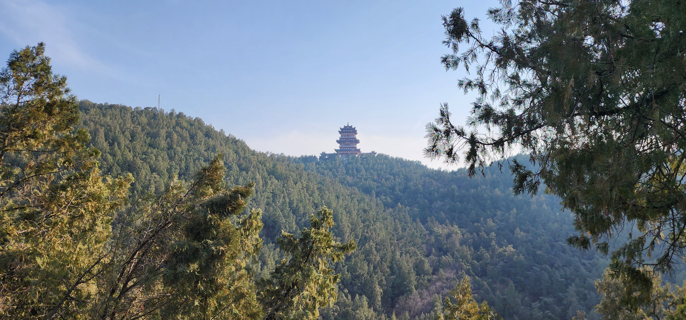
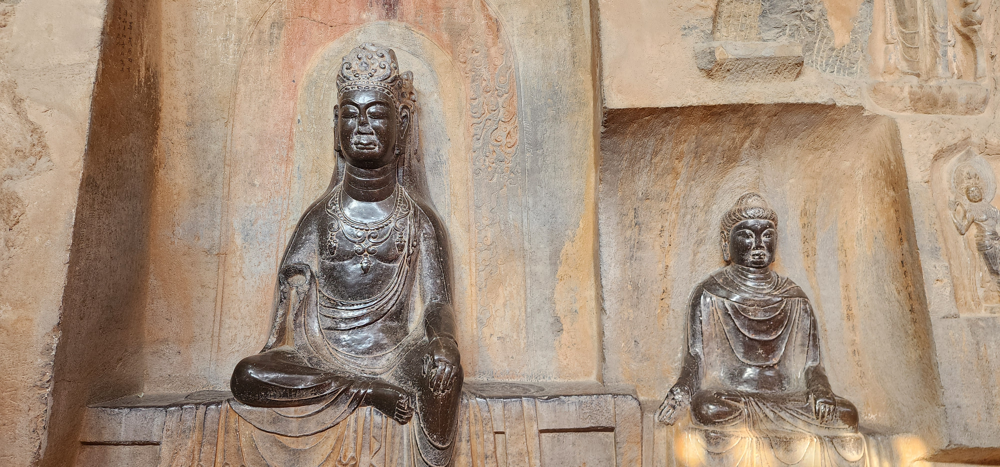
Yaowang Mountain, Tongchuan, Shaanxi (2026)
铜川 药王山石刻
铜川 药王山石刻
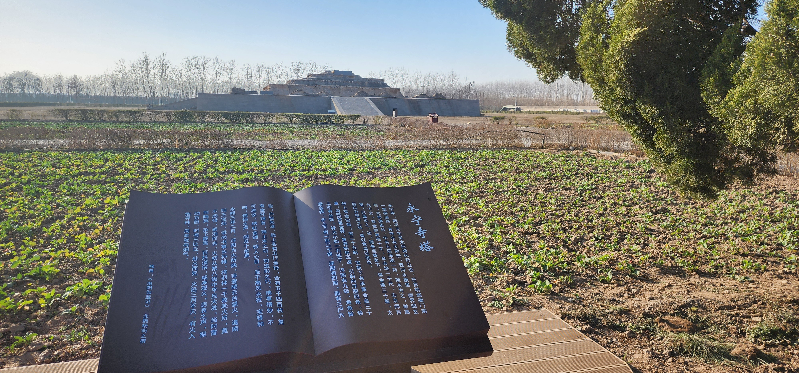

Yongning Temple Pagoda, Luoyang, Henan (2026)
洛阳 永宁寺塔基遗址
洛阳 永宁寺塔基遗址


Shuilu'an Temple, Lantian, Shaanxi (2025)
蓝田 水陆庵
蓝田 水陆庵
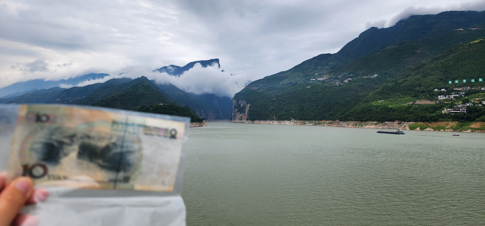
Qutang Gorge, Fengjie, Chongqing (2024)
奉节 瞿塘峡
奉节 瞿塘峡
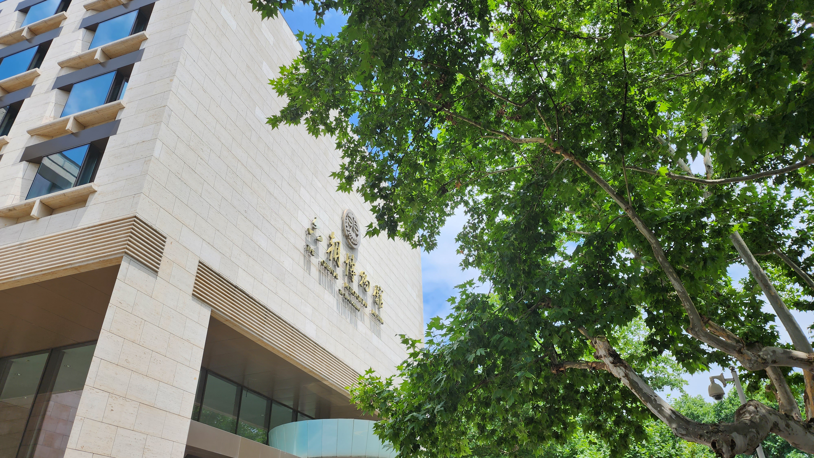
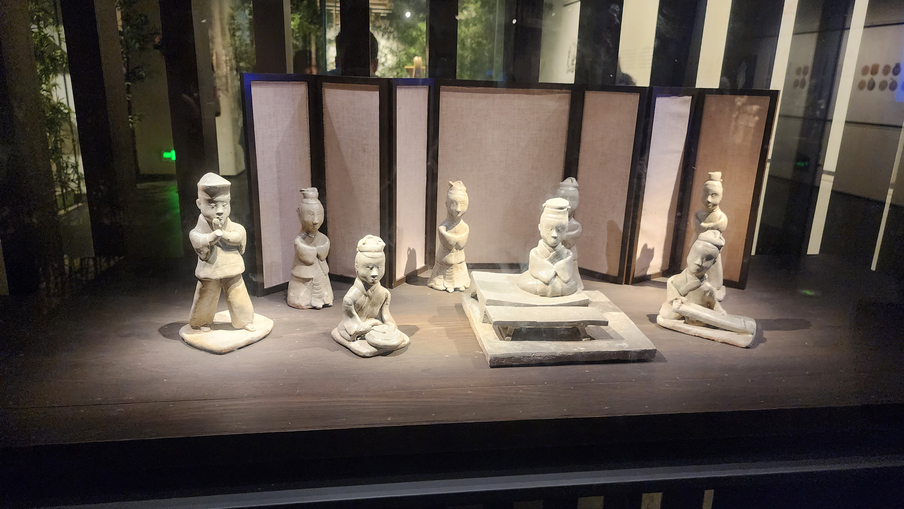
Six Dynasties Museum, Nanjing, Jiangsu (2023)
南京 六朝博物馆
南京 六朝博物馆


Gaochang Ruins, Turpan, Xinjiang (2019)
吐鲁番 高昌故城
吐鲁番 高昌故城

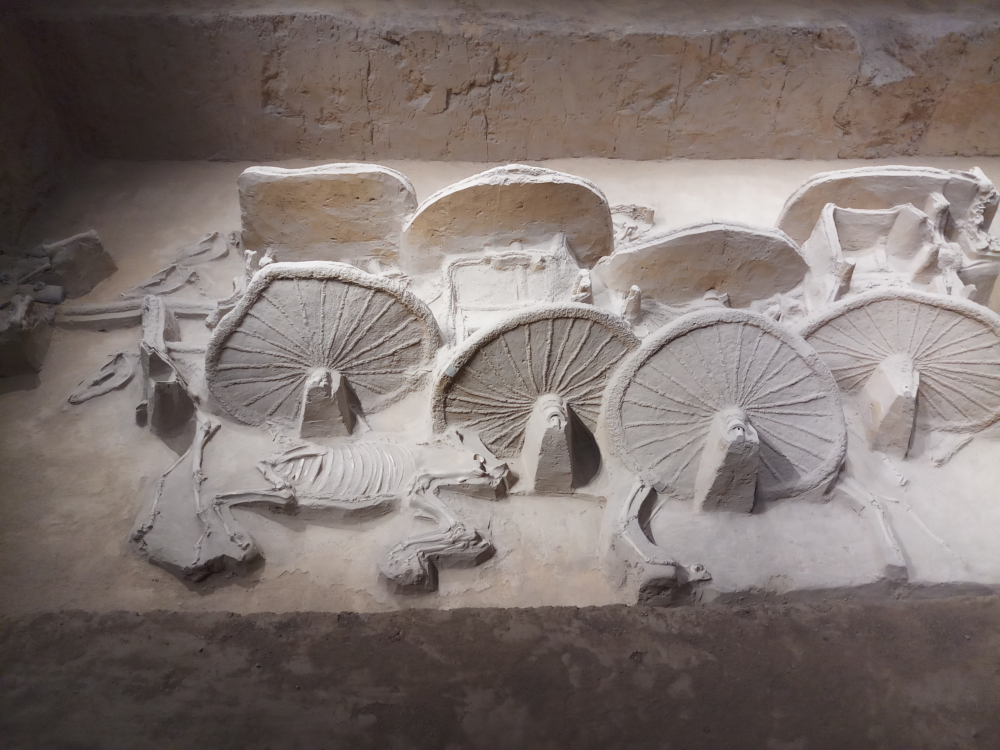
Guo State Museum, Sanmenxia, Henan (2019)
三门峡 虢国博物馆
三门峡 虢国博物馆
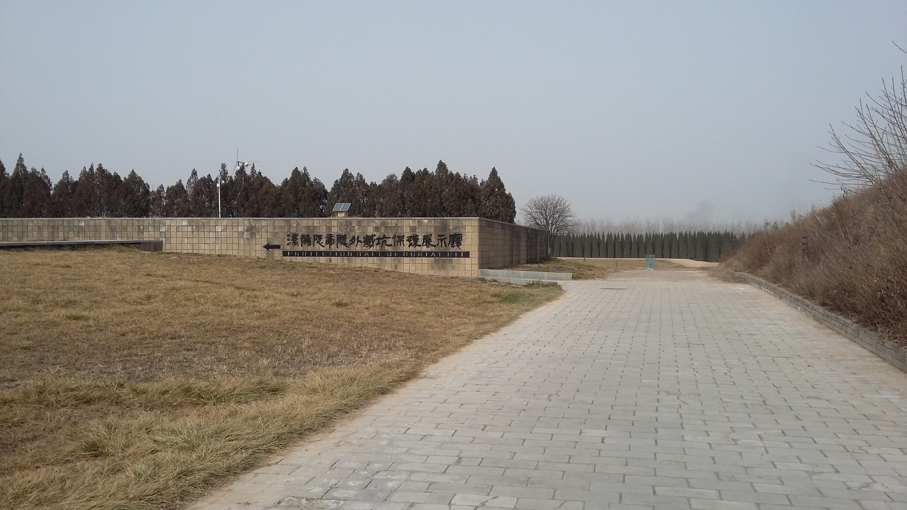
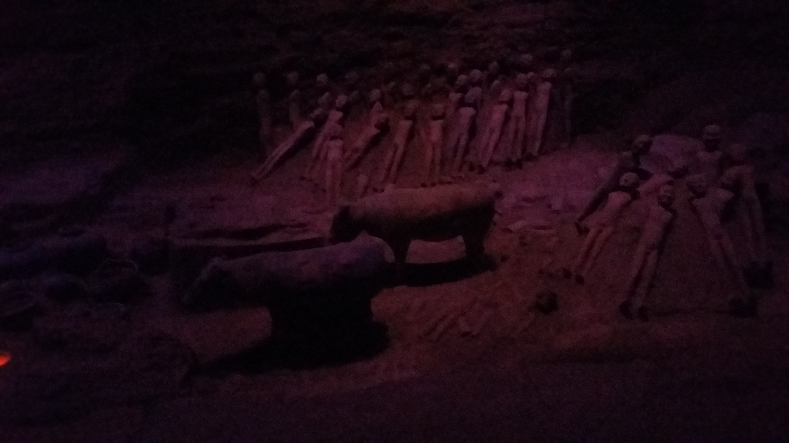
Hanyangling Museum, Xianyang, Shaanxi (2017)
咸阳 汉阳陵博物馆
咸阳 汉阳陵博物馆
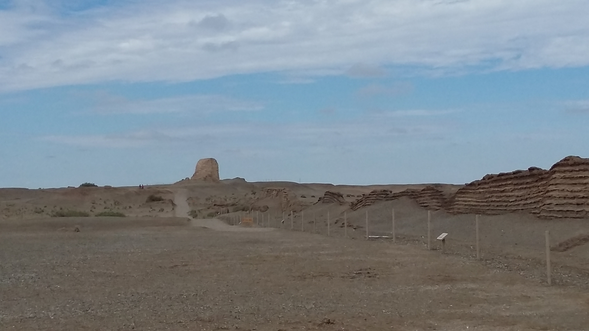
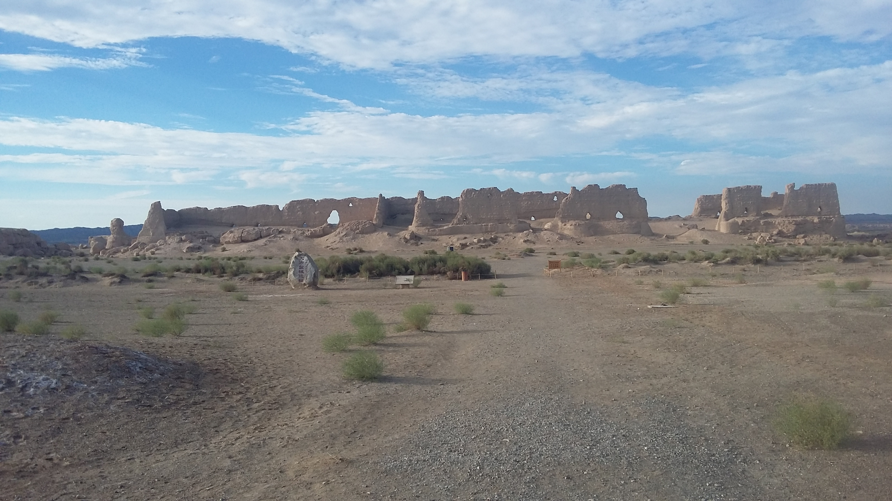
Great Walls of Han Dynasty, Dunhuang, Gansu (2016)
敦煌 汉长城遗址
敦煌 汉长城遗址